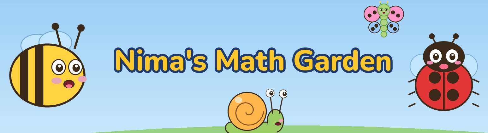

Nima's Math Garden
Nima's Math Garden
Nima's Math Garden — gentle math stories for kids aged 3–5.
Nima the bee and her friends Pona, Mibo and Loni count apples, sort tomatoes, build kites from shapes and learn to read the clock. Every episode is a little story with a goal, a funny surprise and a question your child can answer out loud. New episodes every week, plus songs and longer compilations for watching on TV.
For grown-ups: each video description names its learning goal and the standards it is aligned with (Common Core, Head Start ELOF and early-years frameworks of different countries). No links and no calls to buy anything in the episodes.
Animation and music are made with code, the voices are synthesized, and songs with vocals are marked as AI-generated.
Watch on YouTubeEl jardín de Nima
El jardín de Nima: cuentos de matemáticas tranquilos para niños de 3 a 5 años.
La abeja Nima y sus amigos Pona, Mibo y Loni cuentan manzanas, ordenan tomates, arman cometas con figuras y aprenden a leer el reloj. Cada episodio es una pequeña historia con un objetivo, una sorpresa divertida y una pregunta que tu hijo puede responder en voz alta. Episodios nuevos cada semana, además de canciones y recopilaciones largas para ver en la tele.
Para los adultos: la descripción de cada video indica su objetivo de aprendizaje y los programas en los que se basa (SEP 2022, Common Core y otros marcos de educación inicial). En los episodios no hay enlaces ni invitaciones a comprar.
La animación y la música se crean con código, las voces son sintetizadas y las canciones con voz están marcadas como generadas con IA.
Ver en YouTubeLe jardin de Nima
Le jardin de Nima : de douces histoires de maths pour les enfants de 3 à 5 ans.
Nima l'abeille et ses amis Pona, Mibo et Loni comptent des pommes, trient des tomates, fabriquent des cerfs-volants avec des formes et apprennent à lire l'heure. Chaque épisode est une petite histoire avec un but, une surprise amusante et une question à laquelle votre enfant peut répondre à voix haute. De nouveaux épisodes chaque semaine, des chansons et de longues compilations à regarder à la télé.
Pour les parents : la description de chaque vidéo indique son objectif et les programmes sur lesquels elle s'appuie (programme de l'école maternelle 2024, Common Core et d'autres cadres). Aucun lien ni incitation à acheter dans les épisodes.
L'animation et la musique sont créées par du code, les voix sont synthétiques et les chansons chantées sont signalées comme générées par IA.
Regarder sur YouTubeO jardim da Nima
O jardim da Nima: histórias tranquilas de matemática para crianças de 3 a 5 anos.
A abelha Nima e seus amigos Pona, Mibo e Loni contam maçãs, separam tomates, montam pipas com formas e aprendem a ler o relógio. Cada episódio é uma pequena história com um objetivo, uma surpresa engraçada e uma pergunta que a criança pode responder em voz alta. Episódios novos toda semana, além de músicas e compilações longas para ver na TV.
Para os adultos: a descrição de cada vídeo mostra o objetivo de aprendizagem e as referências usadas (BNCC, Common Core e outros currículos da educação infantil). Nos episódios não há links nem convites para comprar.
A animação e a música são feitas com código, as vozes são sintetizadas e as músicas cantadas são marcadas como geradas por IA.
Assistir no YouTubeनीमा का बगीचा
नीमा का बगीचा — 3 से 5 साल के बच्चों के लिए गणित की प्यारी कहानियाँ।
मधुमक्खी नीमा और उसके दोस्त पोना, मीबो और लोनी सेब गिनते हैं, टमाटर छाँटते हैं, आकृतियों से पतंगें बनाते हैं और घड़ी देखना सीखते हैं। हर एपिसोड एक छोटी कहानी है — एक लक्ष्य, एक मज़ेदार सरप्राइज़ और एक सवाल, जिसका जवाब बच्चा ज़ोर से दे सकता है। हर हफ़्ते नए एपिसोड, साथ में गाने और टीवी पर देखने के लिए लंबे संकलन।
बड़ों के लिए: हर वीडियो के विवरण में उसका सीखने का लक्ष्य और जिन पाठ्यक्रमों पर वह आधारित है, वे लिखे हैं (NCF-FS 2022, Common Core और अन्य)। एपिसोड में कोई लिंक नहीं और कुछ ख़रीदने को नहीं कहा जाता।
एनिमेशन और संगीत कोड से बनाए गए हैं, आवाज़ें कृत्रिम हैं, और गाए गए गानों पर एआई से बने होने का निशान है।
YouTube पर देखेंニマのおにわ
ニマのおにわ — 3〜5さいの こどものための、やさしい さんすうの おはなし。
はちの ニマと ともだちの ポナ、ミボ、ロニが、りんごを かぞえたり、トマトを なかまわけしたり、かたちで たこを つくったり、とけいを よんだりします。どの おはなしにも もくてきと たのしい びっくりと、こどもが こえに だして こたえられる しつもんが あります。まいしゅう あたらしい おはなし。うたや テレビで みられる ながい まとめも あります。
おうちのかたへ：それぞれの どうがの せつめいに、ねらいと よりどころ（幼稚園教育要領・Common Core など）を かいています。おはなしの なかに リンクや こうにゅうの よびかけは ありません。
アニメと おんがくは プログラムで つくり、こえは ごうせいおんせいです。うたの ボーカルは AI で つくったことを しめしています。
YouTubeでみるKebun Nima
Kebun Nima — cerita matematika yang lembut untuk anak usia 3–5 tahun.
Lebah Nima dan teman-temannya Pona, Mibo, dan Loni menghitung apel, mengelompokkan tomat, membuat layang-layang dari bentuk, dan belajar membaca jam. Setiap episode adalah cerita kecil dengan tujuan, kejutan lucu, dan pertanyaan yang bisa dijawab anak dengan suara keras. Episode baru setiap minggu, juga lagu dan kompilasi panjang untuk ditonton di TV.
Untuk orang tua: deskripsi setiap video menyebutkan tujuan belajarnya dan acuan yang dipakai (Capaian Pembelajaran PAUD, Common Core, dan kerangka lain). Di dalam episode tidak ada tautan dan ajakan membeli.
Animasi dan musik dibuat dengan kode, suaranya sintetis, dan lagu dengan vokal ditandai sebagai buatan AI.
Tonton di YouTubeNimas Garten
Nimas Garten — sanfte Mathe-Geschichten für Kinder von 3 bis 5 Jahren.
Die Biene Nima und ihre Freunde Pona, Mibo und Loni zählen Äpfel, sortieren Tomaten, bauen Drachen aus Formen und lernen die Uhr lesen. Jede Folge ist eine kleine Geschichte mit einem Ziel, einer lustigen Überraschung und einer Frage, die dein Kind laut beantworten kann. Jede Woche neue Folgen, dazu Lieder und lange Zusammenstellungen zum Anschauen am Fernseher.
Für Eltern: In jeder Videobeschreibung stehen das Lernziel und die Grundlagen, an denen es sich orientiert (Gemeinsamer Rahmen der Länder, Common Core und weitere). In den Folgen gibt es keine Links und keine Kaufaufforderungen.
Animation und Musik entstehen mit Code, die Stimmen sind synthetisch, und gesungene Lieder sind als KI-generiert gekennzeichnet.
Auf YouTube ansehenحديقة نيما
حديقة نيما — قصص رياضيات لطيفة للأطفال من 3 إلى 5 سنوات.
النحلة نيما وأصدقاؤها بونا وميبو ولوني يعدّون التفاح، ويصنّفون الطماطم، ويصنعون طائرات ورقية من الأشكال، ويتعلّمون قراءة الساعة. كل حلقة قصة صغيرة فيها هدف ومفاجأة مضحكة وسؤال يستطيع الطفل أن يجيب عنه بصوت عالٍ. حلقات جديدة كل أسبوع، وأغانٍ وتجميعات طويلة للمشاهدة على التلفاز.
للكبار: في وصف كل فيديو هدفه التعليمي والمعايير التي يستند إليها (معايير التعلّم المبكر في السعودية، وCommon Core، وأطر أخرى). لا توجد في الحلقات روابط ولا دعوات للشراء.
الرسوم والموسيقى مصنوعة بالبرمجة، والأصوات مُركّبة، والأغاني المغنّاة مُعلَّمة بأنها مولّدة بالذكاء الاصطناعي.
شاهد على يوتيوب